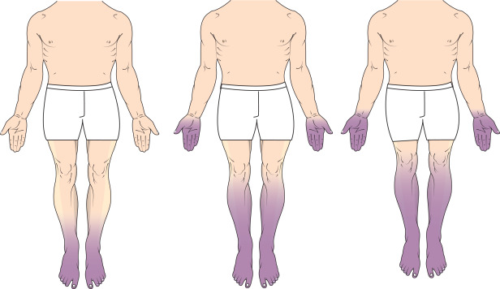

Idiopathic progressive polyneuropathy, also known as chronic idiopathic axonal polyneuropathy (CIAP), is a disease that affects the peripheral nervous system's sensory and motor nerves.
Symptoms include pain, numbness, tingling, and weakness in the hands and feet. As the disease progresses, patients may experience balance problems and difficulty walking. The cause is often unknown, but some common causes include diabetes, alcohol abuse, poor nutrition, and exposure to certain drugs or toxins.
Diagnosis is based on history, clinical examination, and laboratory investigations.Treatment focuses on relieving pain, reducing inflammation, and slowing joint and bone damage. Treatments include over-the-counter pain medication, prescription drugs, and therapeutic shoes.
